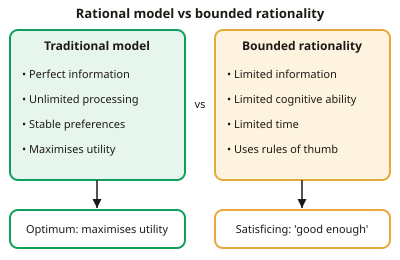

A-level Economics Year 13 · Topic 11
Individual economic decision making
This topic uses behavioural economics to explain how real people make decisions.
We will look at bounded rationality, self control, habits and biases like anchoring, framing and loss aversion.
Then we explore the influence of other people, nudge policies and choice architecture, and evaluate behavioural economics as a guide for government policy.
- 6 subtopics
- 177 questions
- Free: 11.1 notes and 10 questions
In this topic
- 11.1Rational decision making and its limits: bounded rationalityFree below · 30 questions
- 11.2Bounded self-control, habit and rules of thumbOpen in Full Marks · 31 questions
- 11.3Biases in decision making: anchoring, framing, availability and loss aversionOpen in Full Marks · 30 questions
- 11.4Influence of others: social norms, herding, altruism and fairnessOpen in Full Marks · 34 questions
- 11.5Choice architecture and nudge policies: default, mandated and restricted choice, framing and incentivesOpen in Full Marks · 28 questions
- 11.6Evaluating behavioural economics as a basis for government interventionOpen in Full Marks · 24 questions
11.1 · Free notes
Rational decision making and its limits: bounded rationality

Key points
- The traditional model assumes rational economic agents (homo economicus): consumers maximise utility, firms maximise profit, and workers maximise net benefit. They act in their own self-interest, with perfect information and stable, consistent preferences.
- Rational decision making means weighing marginal benefit against marginal cost and choosing the option with the greatest net benefit. For consumers, MU/P is equal across goods. For firms, output is set where MC = MR.
- Bounded rationality (Herbert Simon) means people try to be rational but are constrained by limited information, limited cognitive ability (processing capacity) and limited time. Behaviour is therefore 'rational within limits', not irrational.
- The usual result is satisficing (Simon): choosing the first option that meets an acceptable threshold, rather than searching for the optimum. The decision maker stops searching once the option is 'good enough'.
- People rely on heuristics (rules of thumb) to simplify complex choices. These save time and effort but can produce systematic errors, so behaviour often differs from the rational prediction in a predictable way.
- Information is costly to gather. Search costs and information overload mean that more information does not always lead to better decisions, because people cannot process it all.
- Firms are boundedly rational too. Managers may satisfice (aim for 'acceptable' profit) or use cost-plus pricing instead of calculating MC = MR. Separation of ownership and control (the principal–agent problem) adds to this.
- Calculation example: options give 40, 55, 70 and 90 utils. A satisficer with a threshold of 50 who searches in order picks 55, so loses 90 − 55 = 35 utils compared with a maximiser.
- Behavioural economics uses insights from psychology to explain real decision making. Policy implication: information-only policies (such as calorie labels) may fail, so governments use nudges and choice architecture. Governments also face bounded rationality (government failure).
- Evaluation: the rational model remains a useful benchmark and predicts well for repeated, high-stakes decisions by experts. Bounded rationality describes complex, novel or rushed decisions better, but it gives less precise predictions than the single-optimum rational model.
In more detail
- Worked satisficing: a student comparing 10 laptops stops at the first one that meets their needs (under £600, 8 hours of battery), even though a better one is further down the list.
- Search costs: comparing every energy tariff takes time, so many households stay on their default tariff even when switching would save money.
- Choice overload: Iyengar and Lepper (2000) found shoppers were far more likely to buy jam when offered 6 flavours than when offered 24.
- Exam tip: bounded rationality doesn't mean people are irrational; it means they make reasonable choices within limits of information, time and brainpower.
Practice
Rational decision making and its limits: bounded rationality: 10 questions
Pick an answer to check it, or open the answer for the explanation.
1. Which economist developed the concept of bounded rationality?
- Alfred Marshall
- Adam Smith
- Herbert Simon
- Daniel Kahneman
Show answer
C: Herbert Simon. Herbert Simon introduced bounded rationality: decision makers face limits on information, cognitive ability and time. Kahneman and Tversky later developed prospect theory.
2. What is meant by satisficing?
- Delaying a decision until all information is known
- Always choosing the cheapest option available
- Choosing the option that gives the maximum possible utility
- Choosing the first option that meets an acceptable standard
Show answer
D: Choosing the first option that meets an acceptable standard. Satisficing means accepting an option that is 'good enough' (meets a threshold) instead of searching for the best one. It follows from bounded rationality.
3. Which is an assumption of the traditional rational decision-making model?
- Consumers aim for a 'good enough' outcome
- Consumers have perfect information and aim to maximise utility
- Preferences change depending on how choices are framed
- Consumers use rules of thumb to save time
Show answer
B: Consumers have perfect information and aim to maximise utility. The traditional model assumes rational agents with perfect information, consistent preferences and the aim of maximising utility. The other options describe behavioural ideas.
4. A shopper buys the first laptop under £600 that meets her needs, ignoring 150 other models. This is best described as:
- Satisficing due to bounded rationality
- Utility maximisation with perfect information
- Loss aversion
- Price discrimination
Show answer
A: Satisficing due to bounded rationality. She stops searching at the first acceptable option instead of comparing all 150 models, which is satisficing. It reflects limited time and processing capacity.
5. Which is NOT a constraint highlighted by bounded rationality?
- Limited cognitive capacity
- Perfectly stable and consistent preferences
- Limited time to decide
- Incomplete information
Show answer
B: Perfectly stable and consistent preferences. Bounded rationality stresses limits on time, cognition and information. Stable, consistent preferences are an assumption of the rational model, not a constraint.
6. Options give utility A 40, B 55, C 70, D 90. A satisficer with threshold 50 searches in order A–D. How much utility is lost compared with maximising?
- 35 utils
- 50 utils
- 20 utils
- 15 utils
Show answer
A: 35 utils. The satisficer stops at B (55), the first option above 50. A maximiser picks D (90). The utility lost is 90 − 55 = 35 utils.
7. Why might providing more detailed information fail to improve decisions?
- Information makes search costs zero
- Consumers are perfectly rational
- Information is always a public good
- Information overload exceeds people's limited processing capacity
Show answer
D: Information overload exceeds people's limited processing capacity. Bounded rationality means people can only process so much. Too much information can overwhelm them, so they use shortcuts or ignore it.
8. Which firm behaviour is most consistent with bounded rationality?
- Pricing using a fixed 20% mark-up on average cost
- Setting output where MC = MR after a full cost analysis
- Maximising revenue in perfect competition
- Entering markets only with perfect information
Show answer
A: Pricing using a fixed 20% mark-up on average cost. A fixed mark-up (cost-plus pricing) is a rule of thumb that avoids calculating MC and MR, which fits limited information and cognitive ability.
9. 60% of households stay on a default energy tariff although switching would save £300 a year on average. Best behavioural explanation?
- Switching has no cost of any kind
- Households maximise utility with perfect information
- Households face limited attention and rely on inertia
- Energy demand is perfectly elastic
Show answer
C: Households face limited attention and rely on inertia. Limited attention, search costs and inertia (bounded rationality) explain why many stay on defaults despite clear savings. Perfect-information maximisers would switch.
10. Which statement about bounded rationality is correct?
- Individuals never make rational choices
- It assumes people have perfect self-control
- It applies only to firms, not consumers
- Individuals aim for good decisions but are constrained in achieving them
Show answer
D: Individuals aim for good decisions but are constrained in achieving them. Bounded rationality does not say people are irrational. They try to decide well but are limited by information, cognitive ability and time.
Keep going in Full Marks
Full Marks has 30 questions on Rational decision making and its limits: bounded rationality (20 more than here), set out in practice levels. You also get notes and 3D models for all 6 subtopics of Individual economic decision making, plus games, timed exams and past papers.
On your exam board
Not in the OCR, Edexcel and Cambridge specifications.